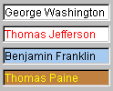

AWT (Abstract Windows Toolkit) es la parte de Java
que se emplea para construir interfaces gráficas de usuario.
Este paquete ha estado presente desde la primera versión (la 1.0),
aunque con la 1.1 sufrió un cambio notable. En la versión
1.2 se incorporó también a Java una librería adicional,
Swing,
que enriquece a AWT en la construcción de aplicaciones gráficas.
Resumen de controles AWT
AWT proporciona una serie de controles que podremos colocar en
las aplicaciones visuales que implementemos. Dichos controles son subclases
de la clase Component, y forman parte del paquete
java.awt. Las más comunes son:
Los controles sólo se verán si los añadimos sobre
un contenedor (un elemento de tipo Container, o cualquiera de sus
subtipos). Para ello
utilizamos el método add(...) del contenedor para añadir
el control. Por ejemplo, si queremos añadir un botón a un
Panel:
Button boton = new Button("Pulsame");
Panel panel = new Panel();
...
panel.add(boton);
A continuación vamos a ver una descripción de cada uno de los controles que ofrece AWT.
Component
La clase padre Component no se puede utilizar directamente.
Es una clase abstracta, que proporciona algunos métodos útiles
para sus subclases.
Botones
Para emplear la clase Button, en el constructor simplemente
indicamos el texto que queremos que tenga :
Button boton = new Button("Pulsame");
Etiquetas
Para utilizar Label, el uso es muy similar al botón:
se crea el objeto con el texto que queremos darle:
Label etiq = new Label("Etiqueta");
Areas de dibujo
La clase Canvas se emplea para heredar de ella y crear componentes
personalizados.
Accediendo al objeto Graphics de los elementos podremos darle
la apariencia que queramos: dibujar líneas, pegar imágenes,
etc:
Panel p = new Panel();
p.getGraphics().drawLine(0, 0, 100, 100);
p.getGraphics().drawImage(...);
Casillas de verificación
Checkbox se emplea para marcar o desmarcar opciones. Podremos
tener controles aislados, o grupos de Checkboxes en un objeto CheckboxGroup, de forma que sólo una de las casillas del grupo pueda marcarse
cada vez.
Para utilizar una lista desplegable (objeto Choice ),
se crea el objeto y se añaden, con el método addItem(...)
, los elementos que queramos a la lista:
Choice ch = new Choice();
ch.addItem("Opcion 1");
ch.addItem("Opcion 2");
...
int i = ch.getSelectedIndex();
Para utilizar listas fijas (objeto List), en el constructor
indicamos cuántos elementos son visibles. También podemos
indicar si se permite seleccionar varios elementos a la vez. Dispone de
muchos de los métodos que tiene Choice para añadir
y consultar elementos.
List lst = new List(3, true);
lst.addItem("Opcion 1");
lst.addItem("Opcion 2");
Cuadros de texto
Al trabajar con TextField o TextArea, se indica opcionalmente
en el constructor el número de columnas (y filas en el caso de TextArea)
que se quieren en el cuadro de texto.
TextField tf = new TextField(30);
TextArea ta = new TextArea(5, 40);
...
tf.setText("Hola");
ta.appendText("Texto 2");
String texto = ta.getText();
Menús
Para utilizar menús, se emplea la clase MenuBar (para
definir la barra de menú), Menu (para definir cada menú),
y MenuItem (para cada opción en un menú). Un menú
podrá contener a su vez submenús (objetos de tipo Menu
). También está la clase CheckboxMenuItem para definir
opciones de menú que son casillas que se marcan o desmarcan.
MenuBar mb = new MenuBar();
Menu m1 = new Menu "Menu 1");
Menu m11 = new Menu ("Menu 1.1");
Menu m2 = new Menu ("Menu 2");
MenuItem mi1 = new MenuItem ("Item 1.1");
MenuItem mi11=new MenuItem ("Item 1.1.1");
CheckboxMenuItem mi2 =
new CheckboxMenuItem("Item 2.1");
mb.add(m1);
mb.add(m2);
m1.add(mi1);
m1.add(m11);
m11.add(mi11);
m2.add(mi2);
Mediante el método setMenuBar(...) de Frame podremos añadir
un menú a una ventana:
Frame f = new Frame();
f.setMenuBar(mb);
Swing
Como se ha comentado, en versiones posteriores de Java se introdujo una nueva librería gráfica más potente, que es Swing. Anteriormente se ha visto una descripción de los controles AWT para construir aplicaciones visuales. En cuanto a estructura, no hay mucha diferencia entre los controles proporcionados por AWT y los proporcionados por Swing: éstos se llaman, en general, igual que aquéllos, salvo que tienen una "J" delante; así, por ejemplo, la clase Button de AWT pasa a llamarse JButton en Swing , y en general la estructura del paquete de Swing (javax.swing) es la misma que la que tiene java.awt.
Pero yendo más allá de la estructura, existen importantes diferencias entre los componentes Swing y los componentes AWT:
Los componentes Swing están escritos sin emplear código nativo, con lo que ofrecen más versatilidad multiplataforma (podemos dar a nuestra aplicación un aspecto que no dependa de la plataforma en que la estemos ejecutando).
Los componentes Swing ofrecen más capacidades que los correspondientes AWT: los botones pueden mostrar imágenes, hay más facilidades para modificar la apariencia de los componentes, etc.
Al mezclar componentes Swing y componentes AWT en una aplicación, se debe tener cuidado de emplear contenedores AWT con elementos Swing, puesto que los contenedores pueden solapar a los elementos (se colocan encima y no dejan ver el componente).
Resumen de controles Swing
Los controles en Swing tienen en general el mismo nombre que los de AWT, con una "J" delante. Así, el botón en Swing es JButton , la etiqueta es JLabel , etc. Hay algunas diferencias, como por ejemplo JComboBox (el equivalente a Choice de AWT), y controles nuevos. Vemos aquí un listado de algunos controles:
JComponent
La clase padre para los componentes Swing es JComponent , paralela al Component de AWT.
Botones
Se tienen botones normales (JButton), de verificación (JCheckBox), de radio (JRadioButton), etc, similares a los Button, Checkbox de AWT, pero con más posibilidades (se pueden añadir imágenes, etc).
Etiquetas
Las etiquetas son JLabel, paralelas a las Label de AWT pero con más características propias (iconos, etc).
Cuadros de texto

Las clases JTextField y JTextArea representan los cuadros de texto en Swing, de forma parecida a los TextField y TextArea de AWT.
Listas
Las clases JComboBox y JList se emplean para lo mismo que Choice y List en AWT.
Diálogos y ventanas
Las clases JDialog (y sus derivadas) y JFrame se emplean para definir diálogos y ventanas. Se tienen algunos cuadros de diálogo específicos, para elegir ficheros (JFileChooser ), para elegir colores (JColorChooser), etc.
Menús
Con JMenu, JMenuBar, JMenuItem, se construyen los menús que se construian en AWT con Menu, MenuBar y MenuItem.
Gestores de disposición
Para colocar los controles Java en los contenedores se hace uso de un determinado gestor de disposición. Dicho gestor indica cómo se colocarán los controles en el contenedor, siguiendo una determinada distribución. Para establecer qué gestor queremos, se emplea el método setLayout(...) del contenedor. Los gestores de disposición se encuentran dentro del paquete java.awt, pero nos servirán indistintamente para controles AWT y Swing. Por ejemplo:
Panel panel = new Panel(); panel.setLayout(new BorderLayout());
JPanel p2 = new JPanel(); p2.setLayout(new BorderLayout());
Veremos ahora los gestores más importantes:
BorderLayout
(gestor por defecto para contenedores tipo Window)
Divide el área del contenedor en 5 zonas: Norte ( NORTH
), Sur (SOUTH), Este (EAST), Oeste (WEST) y Centro
(CENTER), de forma que al colocar los componentes deberemos indicar
en el método add(...) en qué zona colocarlo:
panel.setLayout(new BorderLayout());
Button btn = new Button("Pulsame");
panel.add(btn, BorderLayout.SOUTH);
Al colocar un componente en una zona, se colocará sobre el que
existiera anteriormente en dicha zona (lo tapa).
FlowLayout
(gestor por defecto para contenedores de tipo Panel)
Con este gestor, se colocan los componentes en fila, uno detrás
de otro, con el tamaño preferido (preferredSize ) que
se les haya dado. Si no caben en una fila, se utilizan varias.
Este gestor sitúa los componentes en forma de tabla, dividiendo
el espacio del contenedor en celdas del mismo tamaño, de forma
que el componente ocupa todo el tamaño de la celda.
Se indica en el constructor el número de filas y de columnas.
Luego, al colocarlo, va por orden (rellenando filas de izquierda a derecha).
Diferencias entre AWT y Swing en la disposición de elementos
Hay una diferencia en los gestores de disposición en Swing: para ciertos contenedores (JFrames y JDialogs), se debe acceder al getContentPane() del contenedor, antes de llamar a su método setLayout para establecer el gestor, y también antes de llamar a su método add para añadirle elementos. No ocurre así para los JPanel. Veamos algunos ejemplos:
JPanel panel = new JPanel(); panel.setLayout(new BorderLayout());
panel.add(new JButton("Hola"));
JFrame f = new JFrame(); f.getContentPane().setLayout(new BorderLayout());
f.getContentPane().add(new JButton("Hola"));
JDialog d = new JDialog(); d.getContentPane().setLayout(new FlowLayout()); d.getContentPane().add(new JButton("Hola"));
Esta diferencia desaparece con la versión 1.5 de Java, pero deberemos tenerla presente en versiones anteriores.
Ejemplo: Vemos el aspecto de algunos componentes de Swing,
y el uso de gestores de disposición en este ejemplo:
El código nos muestra cómo se crea una clase que es una
ventana principal (hereda de JFrame), y define un gestor que es un GridLayout,
con 4 filas y 2 columnas. En ellas vamos colocando etiquetas (JLabel),
botones (JButton), casillas de verificación (JCheckbox), listas
desplegables (JComboBox) y cuadros de texto (JTextField). Además,
se crea un menú con diferentes opciones. El ejemplo sería muy similar en AWT, simplemente cambiando los controles por los equivalentes en AWT, y haciendo algún retoque a la hora de establecer gestores de disposición y añadir elementos a la ventana principal. Aquí tendríamos el ejemplo en AWT:
Observad las diferencias entre una y otra aplicación, en cuanto a cómo se programan, y cómo se ven los componentes en pantalla (debido a la independencia de plataforma de Swing).
Ejercicio 1: Nuestra primera aplicación AWT
En la plantilla tenéis la clase sesion09.Calculadora. Pretendemos que sea una calculadora muy simplificada, con la siguiente apariencia:
En la casilla del primer operando pondremos la primera cifra para operar, después en el desplegable Operador elegiremos la operación a realizar (sumar, restar, multiplicar o dividir), y en la casilla del segundo operando pondremos el segundo operando de la operación. Finalmente, pulsando el botón de Calcular, en el último cuadro de texto (junto al botón) nos pondrá el resultado.
En este ejercicio UNICAMENTE vamos a dejar puestos los controles, para que queden como en la imagen. Verás que la clase es un subtipo de Frame, y tiene un constructor vacío, y un método main que crea un objeto de ese tipo y lo muestra (método show). Nos falta completar el constructor para definir la ventana que se mostrará.
Lo primero de todo es definir la ventana sobre la que van a ir los controles: crearemos una ventana de 300 de ancho por 150 de alto, con un gestor de tipo GridLayout, con 4 filas y 2 columnas (como se ve en la figura superior):
public Calculadora()
{
setSize(300, 150);
setLayout(new GridLayout(4, 2));
Después colocamos los componentes, por orden, en la rejilla: primero la etiqueta y el cuadro de texto del primer operando, después la etiqueta y el desplegable... etc:
// Primer operando
Label lblOp1 = new Label("Primer operando:");
TextField txtOp1 = new TextField();
add(lblOp1);
add(txtOp1);
// Operador
Label lblOper = new Label ("Operador:");
Choice operadores = new Choice();
operadores.addItem("+");
operadores.addItem("-");
operadores.addItem("*");
add(lblOper);
add(operadores);
// Segundo operando
Label lblOp2 = new Label("Segundo operando:");
TextField txtOp2 = new TextField();
add(lblOp2);
add(txtOp2);
// Boton de calcular y cuadro de resultado
Button btnRes = new Button ("Calcular");
TextField txtRes = new TextField();
add(btnRes);
add(txtRes);}
Llegados a este punto, compila y ejecuta el programa, para comprobar que no hay errores en el código, y para asegurarte de que el programa va a tener la misma apariencia que el de la figura 1 (lógicamente el programa aún no hará nada, sólo verás la ventana).
Ejercicio 2: Nuestra primera aplicación Swing
La plantilla también tiene la clase sesion09.JCalculadora. Vamos a hacer algo parecido a lo que hemos hecho en el ejercicio anterior, pero en este caso para hacer una aplicación Swing.
Lo primero que hay que hacer es importar el paquete adecuado (además de los de AWT, que NO hay que quitar, porque el modelo de eventos y los gestores de disposición son los mismos).
import java.awt.*;
import java.awt.event.*;
import java.util.*;
import javax.swing.*;
public class JCalculadora ...
Después vamos cambiando los componentes de AWT por los correspondientes de Swing.
En primer lugar, la clase ya no heredará de Frame, sino de su homólogo JFrame
public class JCalculadora extends JFrame
{
...
Después sustituimos cada control de AWT por el correspondiente de Swing, es decir, las líneas:
TextField txtOp1 = new TextField();
...
Choice operadores = new Choice();
...
TextField txtOp2 = new TextField();
...
TextField txtRes = new TextField();
...
Label lblOp1 = new Label("Primer operando:");
...
Label lblOp2 = new Label("Segundo operando:");
...
Label lblOper = new Label("Operador:");
...
Button btnRes = new Button("Primer operando:");
...
Por las correspondientes clases Swing:
JTextField txtOp1 = new JTextField();
...
JComboBox operadores = new JComboBox();
...
JTextField txtOp2 = new JTextField();
...
JTextField txtRes = new JTextField();
...
JLabel lblOp1 = new JLabel("Primer operando:");
...
JLabel lblOp2 = new JLabel("Segundo operando:");
...
JLabel lblOper = new JLabel("Operador:");
...
JButton btnRes = new JButton("Primer operando:");
...
Prueba a compilar y ejecutar la clase... dará error si lo estás ejecutando con una versión inferior a Java 1.5. ¿A qué se debe el error?
Como se explica en la parte de teoría, en Swing algunos métodos de JFrame no pueden ser accedidos directamente, como ocurría con Frame en AWT. Estos métodos son, entre otros, setLayout y add. Así, para solucionar el error anterior, deberás anteponer el método getContentPane() antes de cada método setLayout o add del JFrame:
Compila y comprueba que el programa se muestra como debe, aunque su apariencia sea distinta.
En el siguiente ejercicio completaremos este ejercicio para hacer que el programa "haga algo" (calcule las operaciones), aparte de mostrarse.
Modelo de Eventos en Java
Hasta ahora hemos visto qué tipos de elementos podemos colocar
en una aplicación visual con AWT o Swing, y cómo colocarlos sobre los distintos
contenedores que nos ofrece la librería. Pero sólo con esto nuestra
aplicación no hace nada: no sabemos cómo emitir una determinada respuesta al
pulsar un botón, o realizar una acción al seleccionar una opción del menú.
Para definir todo esto se utilizan los llamados eventos.
Entendemos por evento una acción o cambio en
una aplicación que permite que dicha aplicación produzca una
respuesta. El modelo de eventos de AWT y Swing se descompone en dos grupos
de elementos: las fuentes y los oyentes de eventos. Las fuentes son
los elementos que generan los eventos (un botón, un cuadro de texto,
etc), mientras que los oyentes son elementos que están a la
espera de que se produzca(n) determinado(s) tipo(s) de evento(s) para emitir
determinada(s) respuesta(s).
Para poder gestionar eventos, necesitamos definir el manejador
de eventos correspondiente, un elemento que actúe de oyente sobre
las fuentes de eventos que necesitemos considerar. Cada tipo de evento tiene
asignada una interfaz, de modo que para poder gestionar dicho evento,
el manejador deberá implementar la interfaz asociada. Los oyentes más
comunes son:
ActionListener
Para eventos de acción (pulsar un JButton
, por ejemplo)
ItemListener
Cuando un elemento (JCheckbox, Choice , etc),
cambia su estado
KeyListener
Indican una acción sobre el teclado: pulsar una
tecla, soltarla, etc.
MouseListener
Indican una acción con el ratón que no implique
movimiento del mismo: hacer click, presionar un botón, soltarlo,
entrar / salir...
MouseMotionListener
Indican una acción con el ratón relacionada
con su movimiento: moverlo por una zona determinada, o arrastrar el
ratón.
WindowListener
Indican el estado de una ventana
Cada uno de estos tipos de evento puede ser producido por diferentes
fuentes. Por ejemplo, los ActionListeners pueden producirse al
pulsar un botón, elegir una opción de un menú, o pulsar Intro. Los MouseListener
se producen al pulsar botones del ratón, etc.
Toda la gestión
de eventos se lleva a cabo desde el paquete java.awt.event. Al igual que con los gestores de disposición, podemos utilizarlos indistintamente para AWT y para Swing. Además, Swing incorpora nuevos gestores de eventos en su paquete javax.swing.event, para implementar ciertas funcionalidades específicas sólo de Swing.
Modos de definir un oyente
Supongamos que queremos realizar una acción determinada
al pulsar un botón. En este caso, tenemos que asociar un ActionListener
a un objeto Button o JButton, e indicar dentro de dicho ActionListener
qué queremos hacer al pulsar el botón. Veremos que hay varias formas de hacerlo:
1. Que la propia clase que usa el control implemente el oyente
class MiClase implements ActionListener
{
public MiClase()
{
...
JButton btn = new JButton("Boton");
btn.addActionListener(this);
...
}
public void actionPerformed(ActionEvent e)
{
// Aqui va el codigo de la accion
}
}
2. Definir otra clase aparte que implemente el oyente
class MiClase
{
public MiClase()
{
...
JButton btn = new JButton("Boton");
btn.addActionListener(new MiOyente());
...
}
}
class MiOyente implements ActionListener
{
public void actionPerformed(ActionEvent e)
{
// Aqui va el codigo de la accion
}
}
3. Definir una instancia interna del oyente
class MiClase
{
public MiClase()
{
...
JButton btn = new JButton("Boton");
btn.addActionListener(new ActionListener()
{
public void actionPerformed(ActionEvent e)
{
// Aqui va el codigo de la accion
}
});
...
}
}
Uso de los "adapters"
Algunos de los oyentes disponibles (como por ejemplo MouseListener,
consultad su API) tienen varios métodos que hay que implementar si queremos definir
el oyente. Este trabajo puede ser bastante pesado e innecesario si sólo queremos
usar algunos métodos. Por ejemplo, si sólo queremos hacer algo al hacer
click con el ratón, deberemos redefinir el método mouseClicked, pero
deberíamos escribir también los métodos mousePressed, mouseReleased,
etc, y dejarlos vacíos.
Una solución a esto es el uso de los adapters.
Asociado a cada oyente con más de un método hay una clase ...Adapter
(para MouseListener está MouseAdapter , para WindowListener
está WindowAdapter, etc). Estas clases implementan las interfaces
con las que se asocian, de forma que se tienen los métodos implementados
por defecto, y sólo tendremos que sobreescribir los que queramos modificar.
Veamos la diferencia con el caso de MouseListener, suponiendo
que queremos asociar un evento de ratón a un JPanel para que
haga algo al hacer click sobre él.
1. Mediante Listener:
class MiClase
{
public MiClase()
{
...
JPanel panel = new JPanel();
panel.addMouseListener(new MouseListener()
{
public void mouseClicked(MouseEvent e)
{
// Aqui va el codigo de la accion
}
public void mouseEntered(MouseEvent e)
{
// ... No se necesita
}
public void mouseExited(MouseEvent e)
{
// ... No se necesita
}
public void mousePressed(MouseEvent e)
{
// ... No se necesita
}
public void mouseReleased(MouseEvent e)
{
// ... No se necesita
}
});
...
}
}
Vemos que hay que definir todos los métodos, aunque muchos queden vacíos
porque no se necesitan.
2. Mediante Adapter:
class MiClase
{
public MiClase()
{
...
JPanel panel = new JPanel();
panel.addMouseListener(new MouseAdapter()
{
public void mouseClicked(MouseEvent e)
{
// Aqui va el codigo de la accion
}
});
...
}
}
Vemos que aquí sólo se añaden los métodos necesarios,
el resto ya están implementados en MouseAdapter (o en el adapter
que corresponda), y no hace falta ponerlos.
La aplicación muestra distintos tipos de eventos que
podemos definir sobre una aplicación:
Tenemos una etiqueta llamada lblCont. Tiene definido un evento
de tipo MouseListener para que, cuando el ratón esté dentro de
la etiqueta, muestre un texto, cuando esté fuera, muestre otro.
Por otra parte, tenemos un botón (variable btn) con un evento
de tipo ActionListener para que, al pulsar sobre él, se
incremente en 1 un contador que hay en un cuadro de texto.
También tenemos una lista desplegable (variable ch) que tiene
un evento de tipo ItemListener para que, al cambiar el elemento
seleccionado, se actualiza el valor del contador del cuadro de texto a
dicho elemento seleccionado.
Finalmente, la ventana principal tiene un evento de tipo WindowListener
para que, al pulsar el botón de cerrar la ventana, se finalice la
aplicación (son las últimas líneas de código del constructor).
Retomemos la clase sesion09.JCalculadora que hemos empezado a hacer en un ejercicio previo. Ya tenemos puestos todos los controles, lo que nos queda es "hacer que el programa haga algo". Para ello vamos a definir los eventos.
Definimos un evento sobre el botón, para que, al pulsarlo, tome los dos operandos y el operador seleccionado, y muestre el resultado en el cuadro correspondiente:
// Evento sobre el botón
btnRes.addActionListener(new ActionListener()
{
public void actionPerformed(ActionEvent e)
{
int op1, op2;
try
{
// Tomar los dos operandos
op1 = Integer.parseInt(txtOp1.getText());
op2 = Integer.parseInt(txtOp2.getText());
// Hacer la operacion segun el operador seleccionado
if (((String)(operadores.getSelectedItem())).equals("+"))
txtRes.setText("" + (op1 + op2));
else if (((String)(operadores.getSelectedItem())).equals("-"))
txtRes.setText("" + (op1 - op2));
else if (((String)(operadores.getSelectedItem())).equals("*"))
txtRes.setText("" + (op1 * op2));
} catch (Exception ex) {
txtRes.setText("ERROR EN LOS OPERANDOS");
}
}
});
El otro evento lo definimos sobre la ventana (el Frame) para hacer que se cierre y termine el programa cuando pulsemos el botón de cerrar:
Compila el programa... te dará errores de compilación.
Los errores del paso anterior se deben a que, si accedemos a un control desde dentro de un evento (como por ejemplo a los controles txtOp1, txtOp2, txtRes o la lista operadores, en el evento del botón), dichos controles no pueden ser variables locales normales. El error de compilación dice que deben declararse variables finales, u otra posibilidad es ponerlas como variables globales de la clase. Es decir, podemos hacer lo siguiente:
Sustituir estas líneas:
public JCalculadora()
{
...
JTextField txtOp1 = new JTextField();
...
JComboBox operadores = new JComboBox();
...
JTextField txtOp2 = new JTextField();
...
JTextField txtRes = new JTextField();
...
}
Por estas:
public JCalculadora()
{
...
final JTextField txtOp1 = new JTextField();
...
final JComboBox operadores = new JComboBox();
...
final JTextField txtOp2 = new JTextField();
...
final JTextField txtRes = new JTextField();
...
}
O bien colocarlas fuera del constructor, como variables globales:
public class JCalculadora ...
{
JTextField txtOp1 = new JTextField();
JComboBox operadores = new JComboBox();
JTextField txtOp2 = new JTextField();
JTextField txtRes = new JTextField();
public JCalculadora()
{
...
}
...
}
Compila y ejecuta el programa. Prueba su funcionamiento con algunos ejemplos que se te ocurran. Observa también los ficheros .class que se generan: además del principal (Calculadora.class), aparecen dos más (Calculadora$1.class y Calculadora$2.class). ¿Sabrías decir qué son? (AYUDA: observa que aparecen tantos ficheros adicionales como eventos has definido en la aplicación...)
Otras características de Swing
Swing ofrece otras posibilidades, que se comentan brevemente:
Uso de acciones, objetos Action que coordinan tareas realizadas por distintos elementos.
Uso de bordes, elementos que bordean los controles y ofrecen un mejor aspecto visual a la aplicación.
Uso de iconos: algunos componentes permiten que se les indique un icono a mostrar, mediante la clase ImageIcon.
Uso de la apariencia (look and feel): podemos indicar qué aspecto queremos que tenga la aplicación: específico de Windows, de Motif, etc.
Uso de hilos para gestionar eventos: algunos eventos pueden bloquear componentes durante mucho tiempo, y es mejor separar el tratamiento del evento en un hilo para liberar el componente.
Uso de temporizadores: con la clase Timer podemos definir acciones que queremos ejecutar en un momento determinado o con una periodicidad determinada.
Ejemplo: Vemos un ejemplo de uso de iconos y temporizadores (como icono se emplea esta imagen):
Para utilizar los iconos se utiliza un objeto de tipo ImageIcon y se dice cuál es el fichero de la imagen. Para el temporizador, se utiliza un objeto de tipo Timer. Vemos que se define un ActionListener, que se ejecuta cada X milisegundos (1000, en este caso), ejecutando así un trabajo periódico (mediante el método setRepeats del Timer indicamos que el listener se ejecute periódicamente, o no).
NOTA: en este caso se ha puesto un gif animado haciendo de reloj, pero la animación que tiene es independiente del Timer que hay en el programa, que sólo se utiliza para actualizar el valor del contador. Por casualidad, da el efecto de que se "animan" los dos a la vez.
Pasos generales para construir una aplicación gráfica
Con todo lo visto hasta ahora, ya deberíamos ser capaces de construir
aplicaciones más o menos completas con AWT o Swing. Para ello, los pasos a seguir son:
1.
Definir la clase principal, que será la ventana principal de la aplicación
Cualquier
aplicación debe tener una ventana principal que sea de tipo Frame(AWT) o JFrame (Swing) .
Así pues lo primero que debemos hacer es definir qué clase hará de Frame o JFrame:
import java.awt.*;
import java.awt.event.*; import javax.swing.*;
public class MiAplicacion extends JFrame
{
public MiAplicacion()
{
getContentPane().setSize(500, 400);
getContentPane().setLayout(new GridLayout(1, 1));
...
}
}
podemos definir un constructor, y dentro hacer algunas inicializaciones como
el tamaño de la ventana, el gestor de disposición, etc.
2. Colocar los
controles en la ventana
Una vez definida la clase, e inicializada la
ventana, podemos colocar los componentes en ella:
public MiAplicacion()
{
...
JButton btn = new JButton("Hola");
this.add(btn);
JPanel p = new JPanel();
JLabel l = new JLabel("Etiqueta");
JLabel l2 = new JLabel ("Otra etiqueta");
p.add(l);
p.add(l2);
getContentPane().add(p);
}
}
En nuestro caso añadimos un botón, y un panel con 2 etiquetas.
3.
Definir los eventos que sean necesarios
Escribimos el código de los
eventos para los controles sobre los que vayamos a actuar:
Desde el método main de nuestra clase
principal podemos hacer que se muestre la ventana:
public class MiAplicacion extends JFrame
{
public MiAplicacion()
{
...
}
public static void main(String[] args)
{
MiAplicacion ma = new MiAplicacion();
ma.show();
}
}
5. Definir otras subventanas o diálogos
Aparte de la clase
principal, podemos definir otros Frames o JFrames en otras clases, e
interrelacionarlos. También podemos definir diálogos (Dialogs o JDialogs) que
dependan de una ventana principal y que se muestren en un momento
dado.
Ejercicio 4: Una aplicación más compleja y completa
Para terminar, vamos a construir una aplicación que toque un poco de casi todo lo que hemos estado viendo en estas sesiones.
Vamos a hacer una aplicación Swing que nos sirva como agenda de contactos. Utilizaremos la clase datos.Persona que vimos en la sesión 7 para guardar los datos básicos de cada uno de nuestros contactos (nombre, apellido1, apellido2, direccion y teléfono), y los guardaremos en un fichero, ayudándonos de la clase io.LeeGuardaPersona, que hicimos en la sesión 8.
Lo que haremos en esta sesión es darle una apariencia gráfica a todo: construiremos una ventana (JFrame) en la clase gui.Agenda de la plantilla, que muestre todas las personas que tenemos guardadas en un determinado fichero (el fichero se lo pasaremos como parámetro a la aplicación a través de su método main).
La ventana podría tener una apariencia como la siguiente:
En la ventana, arriba tendremos una lista con nombres de personas, y al seleccionar alguna, abajo en los cuadros de texto aparecerá desglosada la información sobre él. En la parte inferior tendremos una serie de botones que nos servirán para diferentes tareas:
Ver Datos: al pulsarlo mostrará en los cuadros de texto centrales los datos desglosados de la persona que tengamos seleccionada arriba.
Modificar Datos: al pulsarlo modificará los datos que hay guardados de la persona seleccionada, por los que hay en ese momento en los cuadros de texto.
Añadir Persona: añadirá una nueva persona en la lista, con los datos que haya escritos en los cuadros de texto.
Quitar Persona: eliminará de la lista la persona actualmente seleccionada, con todos sus datos
Guardar Fichero: guardará en el mismo fichero que se le pase como entrada los datos actualizados de la lista de personas.
Borrar Cuadros: pondrá en blanco los cuadros de texto centrales, para cuando queramos introducir nueva información
Se os da libertad para que configuréis la apariencia como queráis, siempre que el programa tenga las siguientes funcionalidades:
Abrir correctamente el fichero de personas que se le pasa como parámetro. Deberá leer las personas del fichero, guardarlas en un ArrayList o estructura similar, y mostrar un listado de nombre y primer apellido en un combo, lista fija, o control similar.
Cuando se seleccione un nombre de la lista, se deberán mostrar en una serie de cuadros de texto todos los valores almacenados de esa persona (nombre, apellido1, apellido2, dirección y teléfono), para que se puedan modificar. Para mostrar estos datos, podéis hacer que se muestren cuando se pulse un botón, o directamente cuando se seleccione a alguien en la lista, como mejor sepáis.
Podremos modificar los datos de las personas seleccionadas en los cuadros de texto, y pulsando en un botón de Modificar, modificar dichos datos de la persona, y que se queden así guardados en el ArrayList.
También podremos añadir personas nuevas, y quitar existentes, de la lista, mediante botones para añadir y quitar.
Finalmente, podremos volver a guardar en el mismo fichero que se pasó como parámetro al principio los datos actualizados que haya en el ArrayList en un momento dado.
A partir de aquí, daremos algunas indicaciones de cómo hacer la aplicación, por si no sabéis por dónde empezar, o cómo hacer determinados apartados. En cualquier caso, podéis implementar la aplicación como queráis. Y si queréis, podéis añadir contenidos opcionales, como los que se proponen al final del ejercicio. Si no queréis seguir la guía para probar vosotros mismos, seguid leyendo por aquí
NOTA IMPORTANTE: se obviarán algunas cosas, como los paquetes que se necesitan para usar algunas clases. Deberás importar los paquetes que necesites para poder trabajar con todas las clases que se proponen.
Cómo dar apariencia a la aplicación
Vamos a dar unas recomendaciones para que la aplicación quede visualmente como la de la imagen superior.
En primer lugar, comprobamos que la clase herede de JFrame, y debemos definir unas variables globales de la clase, que serán las que utilicemos después en diferentes eventos y funciones. Dichas variables son los cuadros de texto, y el desplegable. El resto de etiquetas y botones sólo los referenciaremos en el constructor, y no hace falta hacerlos globales.
public class Agenda extends JFrame
{ JComboBox personas = new JComboBox(); JTextField txtNombre = new JTextField(); JTextField txtApellido1 = new JTextField(); JTextField txtApellido2 = new JTextField(); JTextField txtDireccion = new JTextField(); JTextField txtTelefono = new JTextField();
public Agenda(String fich)
{
...
}
Ahora definiremos un tamaño para la misma, de 400 x 300, añadiremos una línea que podemos usar en JFrame, para hacer que se cierre la ventana cuando pulsemos el botón de cerrar (así nos ahorramos definir el evento para cerrar la ventana, es una de la ventajas de Swing):
public Agenda(String fich)
{ setSize(400, 300); setDefaultCloseOperation(JFrame.EXIT_ON_CLOSE); ...
Hay que tener en cuenta que, por defecto, el JFrame tiene un gestor del tipo BorderLayout, que será el que utilicemos para colocar los componentes a continuación.
Colocamos ahora los controles. Definiremos 3 zonas:
Una zona superior, que contendrá el desplegable (zona NORTE)
Una zona central, con todos los cuadros de texto y etiquetas (zona CENTRO)
Una zona inferior, con los botones (zona SUR)
Para la zona superior, definimos un subpanel, que será un GridLayout de una sola celda, ponemos el desplegable dentro. Podríamos directamente añadir el desplegable en la zona norte del JFrame, pero lo hacemos así para que el desplegable ocupe todo el espacio, si no su tamaño sería más estrecho, y no se vería como en la figura.
public Agenda(String fich)
{ ... JPanel panelSup = new JPanel(); panelSup.setLayout(new GridLayout(1, 1)); panelSup.add(personas); ...
Para la zona central, definimos otro panel que será un GridLayout de 5 filas y 2 columnas, para almacenar las 5 etiquetas que hay, y sus correspondientes 5 cuadros de texto:
public Agenda(String fich)
{ ... JPanel panelCen = new JPanel(); panelCen.setLayout(new GridLayout(5, 2));
Finalmente, para la zona inferior definimos otro panel, con un GridLayout de 2 filas y 3 columnas, donde poner todos los botones que hemos visto. Crearemos una variable botón en el constructor para cada uno, y luego más adelante ya le pondremos los eventos.
public Agenda(String fich)
{ ... JPanel panelInf = new JPanel();
panelInf.setLayout(new GridLayout(2, 3));
JButton btnVer = new JButton ("Ver Datos");
JButton btnGuardar = new JButton ("Modificar Datos");
JButton btnAnadir = new JButton ("Añadir Persona");
JButton btnQuitar = new JButton ("Quitar Persona");
JButton btnGuardarFich = new JButton ("Guardar Fichero");
JButton btnBorrarCuadros = new JButton ("Borrar Cuadros");
panelInf.add(btnVer);
panelInf.add(btnGuardar);
panelInf.add(btnAnadir);
panelInf.add(btnQuitar);
panelInf.add(btnGuardarFich);
panelInf.add(btnBorrarCuadros);JPanel panelSup = new JPanel(); ...
Finalmente, añadimos cada uno de los subpaneles a la zona que le corresponde:
Llegados a este punto, compila y ejecuta el programa, para ver si te funciona. Pásale como parámetro cualquier nombre de fichero, porque aún no lo utiliza para nada.
La lista de personas
Veamos ahora cómo gestionar la lista de personas. Para almacenarla en memoria, vamos a hacernos una variable global (junto con los cuadros de texto y el desplegable), de tipo ArrayList, que nos servirá de almacén temporal. También conviene que guardemos en variable global el nombre de fichero que pasamos como parámetro, para poderlo utilizar en eventos y otros métodos.
public class Agenda extends JFrame
{ ArrayList listaPersonas = new ArrayList(); String fichero = null; JComboBox personas = new JComboBox(); ...
}
Después, al final del constructor, una vez estén todos los controles puestos, cargamos los datos en la lista, y los volcamos en el desplegable.
Para cargar los datos en la lista, utilizamos el método io.LeeGuardaPersona.leePersonas que implementaste en la sesión anterior. Le pasaremos como parámetro el fichero que le pasamos como parámetro al constructor:
IMPORTANTE: Podéis utilizar para probar el fichero ficheroPersonas.dat que se tiene en la plantilla, con varias personas ya guardadas. Así podréis comprobar si funciona vuestro código.
A lo largo del programa, mantendremos actualizado el ArrayList en todo momento, con inserciones, borrados y modificaciones. Por lo tanto, el desplegable no sólo vamos a necesitar actualizarlo ahora, al inicio, sino que después en cada inserción o borrado de personas lo necesitaremos reactualizar. Para volcar en cualquier momento la información actualizada en el desplegable, conviene que nos hagamos un método al que podamos llamar siempre que lo necesitemos. En este método hacemos un bucle donde recorremos el ArrayList, sacamos el nombre y primer apellido de cada persona y los añadimos concatenados al desplegable:
for (int i = 0; i < listaPersonas.size(); i++) { Persona p = (Persona)(listaPersonas.get(i)); personas.addItem(p.getNombre() + " " + p.getApellido1()); } }
Al principio del método limpiamos el desplegable, para que no se acumulen resultados en cada actualización.
Ahora sólo nos queda llamar a este método tras cargar por primera vez las personas del fichero, y así tendremos el desplegable actualizado al inicio:
public Agenda(String fich)
{ ... listaPersonas = io.LeeGuardaPersona.leePersonas(fichero); actualizaLista(); }
Aunque ahora no lo necesitemos, también nos interesará hacernos otro método que nos devuelva el índice de la lista (ArrayList) donde se encuentra la persona actualmente seleccionada en el desplegable, con el fin de poder sacar su objeto Persona en cualquier momento, o borrar ese índice, o cualquier operación. Podemos hacer algo como:
private int buscaPersona() { String cad = (String)(personas.getSelectedItem()); int indice = 0; for (int i = 0; i < listaPersonas.size(); i++) { Persona p = (Persona)(listaPersonas.get(i)); if (cad.equals(p.getNombre() + " " + p.getApellido1())) { indice = i; break; } } return indice; }
Asumimos que la persona SIEMPRE se va a encontrar. Se deja como optativo controlar qué hacer si la persona no se encuentra. Observa cómo se busca a la persona en la lista, concatenando nombre y apellido1 y comparándolo con lo que hay en el desplegable seleccionado.
Los eventos del programa
a) Ver los datos de la persona seleccionada
Para que en los cuadros de texto centrales nos aparezcan los datos de la persona que seleccionemos en el desplegable, rellenamos el evento para el botón de Ver Datos (variable btnVer en el constructor). Vamos al final del constructor, y añadimos un evento para este botón.
Lo que tendrá que hacer será tomar el objeto Persona de la persona que haya seleccionada en este momento (utilizaremos el método buscaPersona que hemos hecho antes, para que nos dé el índice de la persona), y luego volcar sus datos en los campos de texto.
public Agenda(String fich)
{ ... btnVer.addActionListener(new ActionListener() { public void actionPerformed(ActionEvent e) { // Buscar en la lista la persona que coincida con el nombre y apellidos seleccionados indice = buscaPersona();
// Quedarnos con los datos de la persona encontrada Persona p = (Persona)(listaPersonas.get(indice));
// Actualizar los cuadros de texto con el dato correspondiente de la persona seleccionada txtNombre.setText(p.getNombre()); txtApellido1.setText(p.getApellido1()); txtApellido2.setText(p.getApellido2()); txtDireccion.setText(p.getDireccion()); txtTelefono.setText(p.getTelefono()); } }); }
b) Borrar todos los cuadros de texto
Para que los cuadros de texto centrales puedan borrarse de forma cómoda (para escribir datos nuevos, o para lo que sea), tenemos el botón Borrar Cuadros (variable btnBorrarCuadros en el constructor). Añádele un evento muy sencillo: tienes que tomar cada uno de los cuadros de texto, y hacerle un setText("") para borrarlo. Como puede ser una operación que se realice desde otras (por ejemplo, poner los cuadros en blanco después de borrar a una persona, o de añadirla), es mejor que hagas un método aparte que ponga los cuadros en blanco, y que desde el evento llames al método:
private void borraCampos() { ... // Rellena esto como creas conveniente }
Cuando pulsemos el botón de Añadir Persona, los datos que haya escritos en los cuadros de texto se añadirán como un nuevo objeto Persona a la lista de personas. Así que en el evento de este botón (variable btnAnadir del constructor) simplemente construirá un nuevo objeto Persona con los datos de los cuadros de texto, y lo añadirá a la lista. Después, llamará al método actualizaLista que hemos hecho antes, para mantener actualizado el desplegable con la nueva inserción. Opcionalmente, podemos volver a dejar los cuadros de texto en blanco, para que quede mejor estéticamente.
public Agenda(String fich)
{ ... btnAnadir.addActionListener(new ActionListener() { public void actionPerformed(ActionEvent e) { Persona p = new Persona(txtNombre.getText(), txtApellido1.getText(), txtApellido2.getText(), txtDireccion.getText(), txtTelefono.getText()); listaPersonas.add(p); actualizaLista(); borraCampos() } }); }
d) Quitar una persona de la lista
Cuando pulsemos el botón de Quitar Persona, se eliminará del desplegable, y también del ArrayList interno. En el evento de este botón (variable btnQuitar del constructor) buscaremos la persona en la lista (con nuestro método buscaPersona), eliminaremos de la lista el índice seleccionado, y actualizaremos después el desplegable con los cambios. También opcionalmente, podemos volver a dejar los cuadros de texto en blanco, para que quede mejor.
public Agenda(String fich)
{ ... btnQuitar.addActionListener(new ActionListener() { public void actionPerformed(ActionEvent e) { int indice = buscaPersona(); listaPersonas.remove(indice); actualizaLista(); borraCampos(); } }); }
e) Modificar una persona de la lista
Cuando pulsemos el botón de Modificar Datos, se actualizarán los datos de la persona que hay actualmente en el desplegable, con los que haya en el cuadro de texto. En el evento de este botón (variable btnGuardar del constructor) buscaremos la persona en la lista (con nuestro método buscaPersona), actualizaremos los datos del objeto Persona utilizando sus métodos setXXX(), y actualizaremos después el desplegable con los cambios. También opcionalmente, podemos volver a dejar los cuadros de texto en blanco, para que quede mejor.
public Agenda(String fich)
{ ... btnGuardar.addActionListener(new ActionListener() { public void actionPerformed(ActionEvent e) { int indice = buscaPersona(); Persona p = (Persona)(listaPersonas.get(indice)); p.setNombre(txtNombre.getText()); p.setApellido1(txtApellido1.getText()); p.setApellido2(txtApellido2.getText()); p.setDireccion(txtDireccion.getText()); p.setTelefono(txtTelefono.getText()); actualizaLista(); borraCampos(); } }); }
Observa cuando lo ejecutes cómo los datos se modifican en la lista directamente, no hace falta llamar a listaPersonas.set(...) en el código. Asumimos que los cuadros de texto estarán debidamente rellenos. Dejamos como opcional controlar que lo estén.
f) Guardar en fichero los datos
Cuando pulsemos el botón de Guardar Fichero , se deberán volcar al fichero los datos de las personas en el ArrayList. Para ello, utilizaremos el método io.LeeGuardaPersona.guardaPersonas(...) que hiciste en la sesión anterior. Le pasaremos como parámetro el nombre del fichero que tiene como parámetro el constructor, y que guardamos en la variable global fichero.
public Agenda(String fich)
{ ... btnGuardarFich.addActionListener(new ActionListener() { public void actionPerformed(ActionEvent e) { LeeGuardaPersona.guardaPersonas(fichero, listaPersonas); } }); }
Observa que, si no hubiésemos guardado el fichero en la variable global, ahora no podríamos acceder a su nombre, puesto que desde este evento no es visible el parámetro del constructor.
Hasta aquí llega la parte obligatoria de la aplicación. Prueba que funciona correctamente, y comenta en el fichero de respuestas qué te ha parecido hacerla, y qué ventajas e inconvenientes le ves a los pasos indicados en esta guía, si es que los has seguido.
(OPCIONAL) Además, si queréis podéis añadir cualquier característica adicional que se os ocurra. Aquí proponemos algunas:
Pasa a menús las opciones que ofrece el programa en forma de botones:
Ver los datos de una persona
Añadir una nueva persona
Quitar una persona
Guardar los datos modificados de la persona
Guardar los datos de todos en el mismo fichero de entrada.
En lugar de pasar como parámetro en el main el fichero con las personas, utiliza la clase JFileChooser de Swing para abrir y guardar ficheros. Así no necesitarás pasar nada como parámetro, incluso podrás crear ficheros nuevos de personas desde el programa. Mira el API para ver cómo utilizarla. Te serán de utilidad sus métodos showOpenDialog y showSaveDialog.
Incluye una especie de "barra de herramientas", con botones para abrir y guardar ficheros, pero que en lugar de texto tengan los típicos iconos de abrir y guardar, y que al pulsarlos se llame a las opciones de JFileChooser del punto anterior. Puedes encontrar los iconos de abrir y guardar en casi cualquier aplicación de Windows, por ejemplo el Word o el WordPad. Captura un pantallazo del programa, recorta los iconos y guárdalos como imágenes para poderlos utilizar. Después, cárgalos en los botones utilizando objetos ImageIcon.
Ordenar los nombres en la lista, según el criterio de ordenación que hicisteis para la clase Persona en la sesión 7.
Controlar todo tipo de errores: al leer el fichero de entrada, al escribir mal los datos en los cuadros de texto, etc. Para sacar mensajes de error en una ventana, os interesará utilizar la clase JOptionPane de Swing, y sus métodos showMessageDialog y similares.
Comenta en el fichero de respuestas las características opcionales que hayas implementado.
PARA ENTREGAR
Guarda en la carpeta modulo3 de tu CVS los siguientes elementos para esta sesión:
Todos los ficheros fuente (sesion09.Calculadora y sesion09.JCalculadora, y también gui.Agenda con la aplicación final hecha). Los otros paquetes y clases necesarias para esta aplicación (datos.Persona e io.LeeGuardaPersona), ya los tendrás añadidos de sesiones anteriores, si no los has modificado en esta.
El fichero de entrada ficheroPersonas.dat que se ha proporcionado.
Fichero de texto respuestas.txt de esta sesión contestando a todas las preguntas formuladas.


{kind=link}